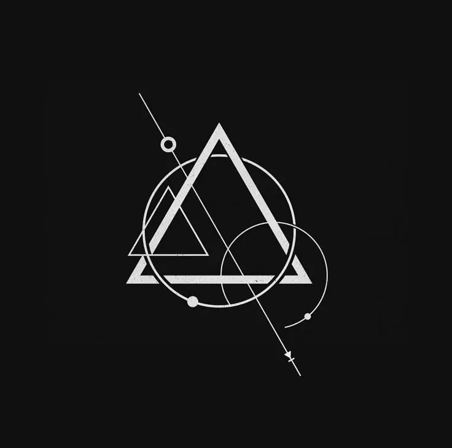

회수 기록
아마리온 회수 영상 기록
Unknown_Record1_860204
이 페이지는 기존 설정 내용을 최대한 유지하고, 관련 확장 설정으로 이어지도록 재정리한 기록입니다.
첨부 이미지 빠른 보기
첨부 회수 이미지 / 아마리온 회수 영상 기록 / HASH c789dad3 첨부 회수 이미지 / 아마리온 회수 영상 기록 / HASH 734d86c7

원본 기록
[원본 오디오/비이미지 리소스는 웹판에서 제외됨]
아마리온 회수 영상 기록
Recovered Amarion Training Footage
본 문서는 F.H.C 극비 분석 부서가 회수한 아마리온 제약 내부 사전교육 영상의 복구 기록이다
해당 영상은 표면적으로는 인류의 미래와 자원 확보를 위한 기술 교육 자료로 제작되었으나, 실제 내용은 현실 외부 공간 접속, 고응축 자원 회수, 생명 연장, 비인가 초자연과학 실험과 연결된 위험 기술 설명 자료로 분류된다
아마리온 제약은 F.H.C와 공식 협력 관계를 맺은 민간 제약 기업이지만, 해당 영상 기록은 아마리온이 F.H.C의 승인 범위를 넘어선 비인가 연구를 진행했을 가능성을 보여준다
기록 정보
문서 분류
분류명:아마리온 회수 영상 기록
영문명:Recovered Amarion Training Footage
회수 기관:F.H.C 극비 분석 부서
관련 기업:아마리온 제약
관련 부서:아마리온 초자연과학 연구 부서
기록 형태:사전교육 영상 / 내부 홍보 영상 / 기술 설명 자료
추정 제작 연도:198x년
보안 등급:극비
위험도:High
회수 경위
해당 영상은 F.H.C가 아마리온 제약 내부 자료를 검토하는 과정에서 회수한 사전교육 영상으로 분류된다
영상은 겉으로는 신규 연구 인력과 협력 인원을 대상으로 한 안내 자료처럼 구성되어 있으나, 일부 구간에서 현실 외부 공간 접속, 고응축 자원 생성, 자기장 기반 공간 왜곡, 비인가 생체 연구와 연결되는 내용이 확인되었다
영상의 일부 구간은 의도적으로 편집되었거나 손상된 상태이며, 핵심 기술 수치와 실험 조건 일부는 누락되어 있다
F.H.C는 해당 기록을 아마리온 제약이 공식 협력 범위를 넘어선 독자 연구를 진행했을 가능성이 있는 자료로 분류하였다
사전교육 영상
Preliminary Training Footage
아마리온 제약
초자연과학 연구 부서
198x/xx/08
[⚠️해당 영상은 관계자 외 시청 금지이며 유출될 시 법적 조치로 이어질 수 있으니 주의해주시기 바랍니다]
저희 주변의 세상은 그동안 수많은 세기를 거치며 많은 변화를 거쳐왔습니다
저희는 수많은 기술적 진보와 함께, 인간의 삶을 완전히 바꿀 혁신의 순간들을 직접 목격해왔습니다
하지만 기술의 발전은 언제나 새로운 변수와 함께 찾아왔습니다
전쟁, 자연재해, 질병, 자원 고갈, 인구 증가와 같은 문제들은 인류의 수명을 제한하고 사회 기반을 무너뜨리는 주요 원인이 되어왔습니다
이러한 현대 사회의 변수들은 앞으로 다가올 미래에 더 큰 위기로 이어질 가능성이 높습니다
향후 수십 년간 인구는 점점 증가할 것이며, 인류는 전례 없는 문제와 마주하게 될 것입니다
그래서 저희는 언젠가 인류가 감당하지 못할 문제에 대비하기 위해 새로운 방법을 준비했습니다
바로 아마리온이 제안하는 차세대 생존 기반 기술입니다
저접근 자기 변형 시스템
Low Proximity Magnetic Distortion System
저희가 개발 중인 핵심 기술은 바로 저접근 자기 변형 시스템입니다.
Low Proximity Magnetic Distortion System
저접근 자기 변형 시스템이란 무엇인가?
해당 시스템은 자기장을 이용하여 현실 세계와 비가시적 공간 사이의 접점을 형성하기 위한 초기형 접속 기술입니다
이를 통해 일반적인 물리 법칙으로는 접근할 수 없는 공간을 제한적으로 개방하고, 그 내부에서 고응축된 자원을 생성하거나 회수하는 것을 목표로 합니다
기술의 핵심은 안정적인 자기장 변형과 임계값 조절입니다
먼저 임계값을 34……
[영상 손상]
……저접근 자기 변형 시스템……
[편집 흔적 확인]
[……응축 및 허용……]
[음성 노이즈 발생]
……어느 지점에서……충분히 비례하는……
[영상 일부 삭제됨]
고응축 자원 회수 계획
Condensed Resource Collection Plan
해당 시스템을 통해 저희는 새로운 공간을 설계하고, 그 안에서 고응축된 자원을 수집할 수 있습니다
현재는 접속 가능한 공간이 제한되어 있지만, 추후에는 접속 범위를 더 크게 확장할 계획입니다
많은 인원과 화물, 운송 장비, 대형 선박의 출입까지 가능해진다면, 인류는 지금까지 경험하지 못한 방식으로 자원을 확보할 수 있을 것입니다
원활한 자원 수집을 통해 진보적인 기술 연구가 가능해지고, 해당 연구를 통해 인류가 직면한 문제들을 해결할 수 있을 것입니다
저희 아마리온은 새로운 미래의 기반을 만들고 있습니다!
프로젝트 장점
영상 내 홍보 문구
프로젝트 장점
- 차후 발생할 자원 비용 절감
- 고가치 자원을 통한 대부분의 자원 절약
- 연구 가치 상승
- 인류 평균 수명 상승
- 안정적인 인프라 구축
- 미래형 산업 기반 확보
- 장기적인 생존 가능성 증가
해당 연구는 인류가 앞으로 맞이할 위기를 극복하기 위한 선택입니다
저희는 기술을 통해 인간의 한계를 극복하고, 미래를 향한 새로운 길을 열고자 합니다
아마리온은 더 나은 내일을 위해, 오늘의 불가능을 연구합니다
시스템의 목적
해당 시스템을 통해 저희는 새로운 공간을 설계하고, 그 내부에서 고응축 상태로 생성된 자원을 수집할 수 있습니다.
현재 해당 공간은 제한된 크기로 유지되고 있으나, 안정화 단계가 진행됨에 따라 더 넓은 구역으로 확장될 예정입니다.
추후에는 인원, 화물, 중장비, 선박 규모의 이동체까지 출입할 수 있도록 확장하는 것이 목표입니다.
이 기술이 완성된다면, 인류는 더 이상 기존 세계의 한정된 자원에만 의존하지 않아도 됩니다.
새로운 공간,새로운 자원,새로운 의학,새로운 생명 연장 기술
그리고 더 나아가, 인류의 수명을 근본적으로 다시 정의할 수 있는 가능성까지 열릴 것입니다.
프로젝트 명칭 손상 구간
xxxx 프로젝트
저희 아마리온은 앞으로의 인류를 더 창대한 미래로 이끌기 위한 xxxx 프로젝트를 여러분과 함께 하게 된 것을 진심으로 환영합니다
To The Eternity
[사전 교육 영상 종료]
위험 기술 분석
현실 접속 위험
저접근 자기 변형 시스템은 현실 세계와 비가시적 공간 사이의 접점을 형성하는 기술로 추정된다
해당 접점이 불안정할 경우, 다음과 같은 위험이 발생할 수 있다
- 공간 접속 실패
- 현실 왜곡
- 통신 장애
- 위치 추적 오류
- 생체 조직 변형
- 비정상 물질 유입
- 괴이 출현
- 우시노다 현상과 유사한 반응
- 화이트존 또는 레드존화 가능성
생체 연구 위험
회수된 기록은 생체 변형과 생명 연장 기술에 대한 집착을 보여준다
해당 연구는 다음 분야와 연결될 수 있다
- 불멸 연구
- 생명 연장
- 변이 조직 안정화
- 괴이 유전자 디지털화
- 생체 프린팅
- 신체 손상 복원
- 타락 진행 억제제
- 우시노다의 힘 일부 통제
자원 회수 위험
고응축 자원은 일반적인 물질이 아닐 가능성이 있다
해당 자원이 현실 외부 공간에서 회수된 물질이라면 생물학적 오염, 정신 오염, 공간 반응, 괴이 변이, 혈액성 반응 등을 유발할 수 있다
따라서 고응축 자원은 단순 산업 자원이 아니라 초상 반응성 물질로 분류해야 한다
회수 영상과 오토마톤 실험체
아마리온 회수 영상 기록은 C.A.P-17, Contamination Response Equipment, Automaton Experiment Type을 흡수한다. 아마리온은 회수와 교육 영상의 형식을 빌려 오염 자산과 실험체 통제 가능성을 시험한 것으로 정리한다.
- C.A.P-17 : 시간 오염 구역 기준점 확보 장비
- Field Sync Tablet : 회수팀 위치와 시간 기준 동기화 장비
- Sample Transport Vehicle : 오염 샘플 운송 차량
- Carrier Automaton : 오염 샘플 운반형 실험체
- Harvest Unit : 괴이 조직과 혈액을 수집하는 실험체 가능성
아마리온 통제 실패 기준
회수 영상 내부에서 반복 재생, 시간 불일치, 음성 왜곡, 기록자 신원 불일치가 나타나면 해당 영상 자체를 Cursed Gear 또는 CI-S 오염 자료로 재분류한다.